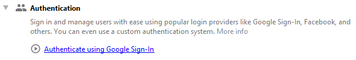
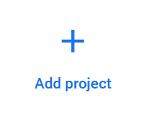
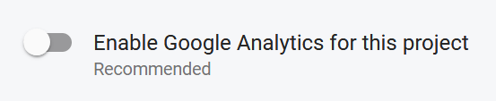
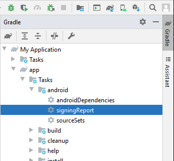
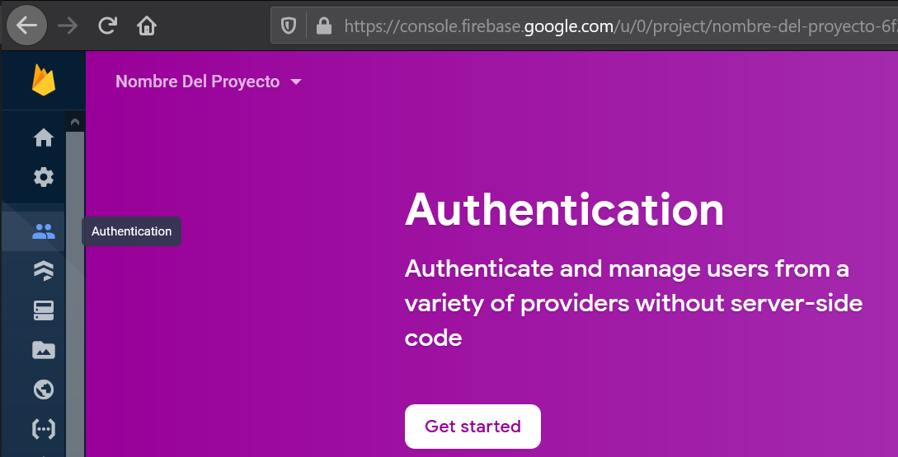
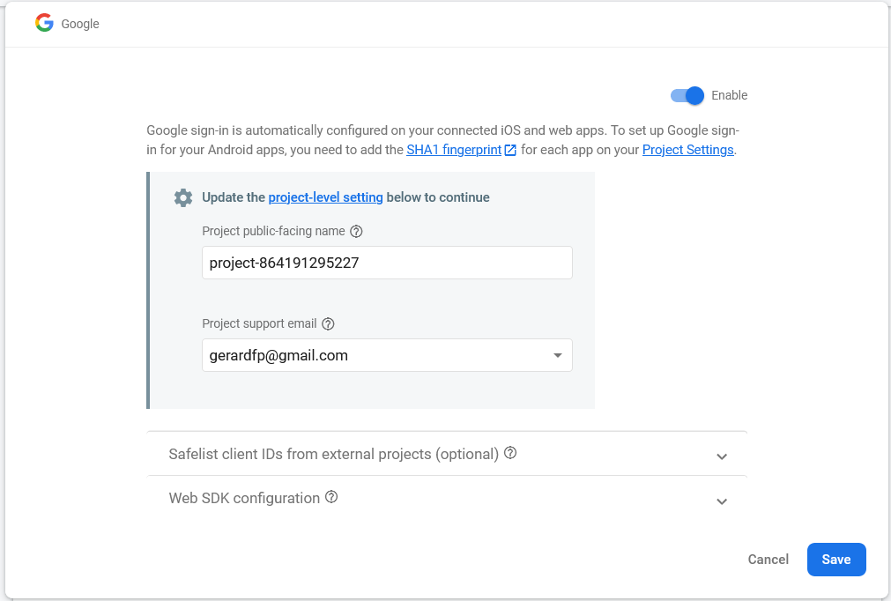
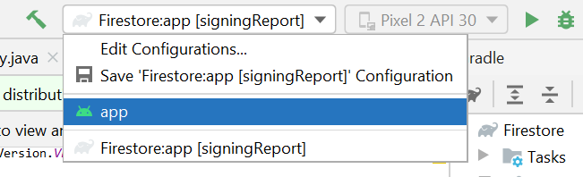
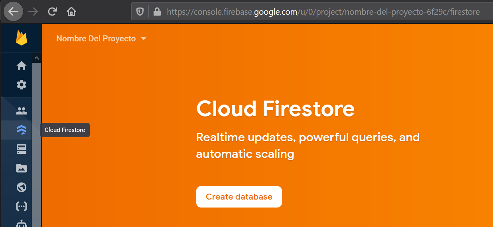

Crea el proyecto
Selecciona "Empty Activity" como plantilla para la MainActivity.
Conecta la app a Firebase
Selecciona HerramientasFirebase para abrir la ventana del Asistente.
-
Haz click en Authentication, y luego en Authenticate using Google Sign-in:

Es posible que en lugar de Authenticate using Google Sign-in te aparezca
Authenticate using email and password. No importa, haz clic igualmente.
Haz clic en Connect to Firebase

Se abrirá la Consola de Firebase en el navegador web.
Loguéate con una cuenta y haz clic en Add project
:

-
Introduce un nombre del proyecto (el que desees) y haz clic en Continue

-
En el paso 2, no es necesario que actives Google Analytics. Haz clic en Create project

Añade la huella SHA-1 de la app
El siguiente paso es añadir la huella SHA-1 de nuestra app. Esto
permitirá a nuestra app acceder a los servicios de Firebase.
En Studio, abre la ventana Gradle y haz click en la tarea signInReport

-
Copia la clave SHA-1 que aparece en el panel inferior

-
Ahora ve a la Consola Firebase.
Abre el proyecto firebase, y ve a Settings / Project settings:

-
Baja hasta el apartado SHA certificate fingerprints y haz clic en Add fingerprint:

-
Pega la clave y haz clic en Save:

Autenticación
Una vez conectada la app con Firebase, desarollaremos la autenticación de usuarios con cuenta Google.
Añade las librerías del Firebase Authentication SDK
Activa el proveedor de autenticación Google
Ahora activaremos la autenticación mediante cuentas de Google.
-
En la Consola Firebase, ve al apartado Authentication y haz clic en Get started:

-
Haz clic en el provider Google. Introduce un Project support email y haz clic en Save:

Prueba la autenticación
Por último programaremos un pequeño test para ver que
la app para que realiza correctamente la auntenticación con una cuenta de Google:
Primero añade estas tres dependencias en el build.gradle (module: App)
implementation 'com.google.android.gms:play-services-auth:19.0.0'
implementation 'androidx.activity:activity:1.2.0-rc01'
implementation 'androidx.fragment:fragment:1.3.0-rc01'
Pon este código en la MainActivity:
import android.content.Intent;
import android.os.Bundle;
import androidx.activity.result.ActivityResultLauncher;
import androidx.activity.result.contract.ActivityResultContracts;
import androidx.appcompat.app.AppCompatActivity;
import com.google.android.gms.auth.api.signin.GoogleSignIn;
import com.google.android.gms.auth.api.signin.GoogleSignInOptions;
import com.google.android.gms.common.api.ApiException;
import com.google.firebase.auth.FirebaseAuth;
import com.google.firebase.auth.GoogleAuthProvider;
public class MainActivity extends AppCompatActivity {
@Override
protected void onCreate(Bundle savedInstanceState) {
super.onCreate(savedInstanceState);
setContentView(R.layout.activity_main);
signInClient.launch(GoogleSignIn.getClient(this, new GoogleSignInOptions.Builder(GoogleSignInOptions.DEFAULT_SIGN_IN).requestIdToken(getString(R.string.default_web_client_id)).build()).getSignInIntent());
}
ActivityResultLauncher<Intent> signInClient = registerForActivityResult(new ActivityResultContracts.StartActivityForResult(), result -> {
try {
FirebaseAuth.getInstance().signInWithCredential(GoogleAuthProvider.getCredential(GoogleSignIn.getSignedInAccountFromIntent(result.getData()).getResult(ApiException.class).getIdToken(), null));
} catch (ApiException e) {}
});
}
Ejecuta la app y autentícate con una cuenta de Google. Luego comprueba que en la Consola Firebase del Proyecto aparece el usuario que se ha autenticado:
Para ejecutar la aplicación tendras que volver a seleccionar app en el selector de configuraciones:


Firestore
Habilitaremos una base de datos Firestore, que permitirá a nuestra app guardar
datos en la nube.
Añade las librerías del Cloud Firestore SDK
-
Ve al Asistente Firebase de Android Studio,
y selecciona la opción Cloud Firestore. Haz clic en
Get started with Cloud Firestore

Haz clic en Add the Cloud Firestore SDK to your app:

Aparecerá un diálogo informando de los cambios que se van a realizar en los ficheros build.gradle.
Haz clic en Accept changes.
Crea la base de datos Firestore
-
Ve a la Consola de Firebase,
y abre el proyecto firebase.
-
Ve al apartado Cloud Firestore y haz clic en Create database:

-
Selecciona "Start in production mode". Haz clic en Next

-
Selecciona la localización eur3 (europe-west) y clic en Enable

Establece las reglas de acceso a la base de datos
Cambiaremos las reglas de acceso a la base de datos para permitir la lectura y escritura
Prueba la base de datos
Programaremos un pequeño test de escritura de datos.
public class MainActivity extends AppCompatActivity {
@Override
protected void onCreate(Bundle savedInstanceState) {
//...
class Post {
public String title;
public String message;
Post(String t, String m){ title = t; message=m; }
}
FirebaseFirestore.getInstance().collection("posts").add(new Post("Hello", "hello world!"));
}
Comprueba que los datos se han guardado en la base de datos Firestore.
Storage
El servicio Storage permite subir ficheros a la nube, y descargarlos mediante una
URL de descarga.
Los pasos para activarlo son los mismos que hemos hecho antes:
-
Desde el Asistente Firebase de Android Studio, añade las librerías Storage a la app.
En la Consola Firebase, ve a la opción Storage y comprueba que está activado.
En la sección Rules del Storage, edita y publica las reglas para permitir la
lectura/escritura de ficheros.
Por último, prueba que funciona añadiendo este código a la app.
// Storage
byte[] bytes = {-1,-40,-1,-32,0,16,74,70,73,70,0,1,2,0,0,1,0,1,0,0,-1,-37,0,67,0,8,6,6,7,6,
5,8,7,7,7,9,9,8,10,12,20,13,12,11,11,12,25,18,19,15,20,29,26,31,30,29,26,28,28,32,
36,46,39,32,34,44,35,28,28,40,55,41,44,48,49,52,52,52,31,39,57,61,56,50,60,46,51,52,
50,-1,-37,0,67,1,9,9,9,12,11,12,24,13,13,24,50,33,28,33,50,50,50,50,50,50,50,50,50,
50,50,50,50,50,50,50,50,50,50,50,50,50,50,50,50,50,50,50,50,50,50,50,50,50,50,50,50,
50,50,50,50,50,50,50,50,50,50,50,50,50,-1,-64,0,17,8,0,15,0,15,3,1,34,0,2,17,1,3,17,
1,-1,-60,0,31,0,0,1,5,1,1,1,1,1,1,0,0,0,0,0,0,0,0,1,2,3,4,5,6,7,8,9,10,11,-1,-60,0,
-75,16,0,2,1,3,3,2,4,3,5,5,4,4,0,0,1,125,1,2,3,0,4,17,5,18,33,49,65,6,19,81,97,7,34,
113,20,50,-127,-111,-95,8,35,66,-79,-63,21,82,-47,-16,36,51,98,114,-126,9,10,22,23,
24,25,26,37,38,39,40,41,42,52,53,54,55,56,57,58,67,68,69,70,71,72,73,74,83,84,85,86,
87,88,89,90,99,100,101,102,103,104,105,106,115,116,117,118,119,120,121,122,-125,
-124,-123,-122,-121,-120,-119,-118,-110,-109,-108,-107,-106,-105,-104,-103,-102,-94,
-93,-92,-91,-90,-89,-88,-87,-86,-78,-77,-76,-75,-74,-73,-72,-71,-70,-62,-61,-60,-59,
-58,-57,-56,-55,-54,-46,-45,-44,-43,-42,-41,-40,-39,-38,-31,-30,-29,-28,-27,-26,-25,
-24,-23,-22,-15,-14,-13,-12,-11,-10,-9,-8,-7,-6,-1,-60,0,31,1,0,3,1,1,1,1,1,1,1,1,1,
0,0,0,0,0,0,1,2,3,4,5,6,7,8,9,10,11,-1,-60,0,-75,17,0,2,1,2,4,4,3,4,7,5,4,4,0,1,2,
119,0,1,2,3,17,4,5,33,49,6,18,65,81,7,97,113,19,34,50,-127,8,20,66,-111,-95,-79,-63,
9,35,51,82,-16,21,98,114,-47,10,22,36,52,-31,37,-15,23,24,25,26,38,39,40,41,42,53,
54,55,56,57,58,67,68,69,70,71,72,73,74,83,84,85,86,87,88,89,90,99,100,101,102,103,
104,105,106,115,116,117,118,119,120,121,122,-126,-125,-124,-123,-122,-121,-120,-119,
-118,-110,-109,-108,-107,-106,-105,-104,-103,-102,-94,-93,-92,-91,-90,-89,-88,-87,
-86,-78,-77,-76,-75,-74,-73,-72,-71,-70,-62,-61,-60,-59,-58,-57,-56,-55,-54,-46,-45,
-44,-43,-42,-41,-40,-39,-38,-30,-29,-28,-27,-26,-25,-24,-23,-22,-14,-13,-12,-11,-10,
-9,-8,-7,-6,-1,-38,0,12,3,1,0,2,17,3,17,0,63,0,118,-85,-29,-117,29,93,87,82,-41,-76,
109,66,-14,11,-101,-77,5,-115,-101,121,50,71,-126,-85,36,91,109,-4,-45,-105,-14,-92,
-116,-77,-19,36,52,-123,119,0,66,-119,108,62,36,105,-2,19,-66,-123,-19,116,-19,70,
29,52,-38,-91,-35,-35,-110,60,47,28,118,-14,15,-35,-68,113,-119,113,19,-105,120,-55,
81,-73,43,35,51,41,59,72,-46,-15,61,-124,30,6,22,-9,23,105,101,109,111,4,-98,69,
-122,-83,53,-97,-38,54,68,119,-108,-73,-62,-80,-107,89,87,35,119,42,85,114,78,-25,
42,38,-16,-65,-123,-20,-4,101,100,-9,51,91,91,-51,-95,-33,74,102,-69,-71,-118,1,108,
53,2,-91,-107,81,85,91,-51,80,-78,2,-20,-50,65,-36,-72,27,-107,-50,-33,30,10,127,89,
-65,43,-65,-85,-73,-7,109,-78,-36,-19,110,62,-53,117,111,77,79,-1,-39};
FirebaseStorage.getInstance().getReference("emoji.jpg").putBytes(bytes);
Comprueba que se ha subido el fichero al Storage.